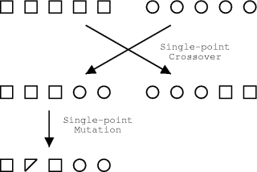

| [ Home | Docs | News | Resources | Download] |
| Introduction to Genetic Algorithms and GAUL |
|
This article provides a basic introduction to genetic algorithms. These simple concepts must be understood if an understanding of GAUL is desired. |
| Evolutionary Computation |
|
It is an appealling idea that the natural concepts of evolution may be borrowed for use as a computational optimisation tool. A family of algorithms have been developed around this idea:
The fundamentals of genetic algorithms will be introduced in this document. For an in depth discussion of Genetic Algorithms and the other related algorithms the interested reader is directed to the GAUL resources list. It should be highlighted that these evolutionary algorithms are not random searches for a very fit individuals (i.e. the solutions to problems). Evolutionary algorithms use stochastic processes to produce a search behaviour which is much better than random. |
| Genetic Algorithms for search and optimisation |
|
Genetic algorithms are now widely applied in science and engineering as adaptive algorithms for solving practical problems. Certian classes of problem are particularly suited to being tackled using a GA based approach. The general acceptance is that GAs are particularly suited to multidimensional global search problems where the search space potentially contains multiple local minima. Unlike other search methods, correlation between the search variables is not generally a problem. The basic GA does not require extensive knowledge of the search space, such as likely solution bounds or functional derivatives. A task for which simple GAs are not suited is rapid local optimisation, however, coupling the GA with other search techniques to overcome this problem is trivial. Whenever multidimensional systematic searching would be technique of choice, except that the large number of comparisons make that approach intractable, a GA should be considered for the reasons outlined in the sections below. GAs were first introduced by John Holland for the formal investigation of the mechanisms of natural adaptation[Holland 1975], but the algorithms have been since modified to solve computational search problems. Modern GAs deviate greatly from the original form proposed by Holland, but their linage is clear. There is no single firm definition for a genetic algorithm, and the computational system is highly simplified compared to the actual situation in nature. Therefore, we must first define a few terms and show how they relate between modern GAs and more traditional evolutionary theory. |
| GA Fundamentals and terminology |
|
In nature all living organisms contain a set of genetic data, termed a "genome". Somehow, this genetic data encodes all of the physical characteristics of the organism, known as the "phenome". A particular set of genetic information is a "genotype", and likewise a particular set of physical characteristics, or "traits", is a "phenotype". There may, or may not, be a direct one-to-one mapping of genotypes to phenotypes. These physical characteristics determine how well suited to its environment a particular organism is. The suitability of a given organism to its environment is usually measured as its "fitness". Computationally, it is usual to evaluate the "fitness" of an organism directly, without considering any kind of phenome. The idea of "Survival of the fittest", as introduced by Darwin[Darwin 1859], is well known. Where in nature the "fitness" relates to the ability of the organism to survive and to reproduce, in genetic algorithms the "fitness" is the evaluated result of some "objective function". Organisms with a better "fitness" score are more likely to be selected for reproduction either through some mechanism of competition to mate, or as a result of the least fit organisms dying. In this way genes which encode beneficial characteristics are propagated through subsequent generations of the population at the expense of genes which encode detrimental characteristics. The genome is stored in the form of DNA in nature. On computers there is more flexibility, but it is common that the main factor controlling whether a particular search problem is successfully resolved, or not, depends upon how the problem was encoded into the genome. In John Holland's original work, a single binary "bitstring" was used. This had computational advantages in terms of efficiency, but with modern computer hardware the balance between raw efficiency and applicability to a given task has swung toward the latter. Many different methods for encoding the genetic information are in common use today; Tree encoding, real-valued arrays, permutations, Gray encoding and so on. |
| Fitness Functions |
|
Putative solutions to the target problem are evaluated using "Fitness functions", otherwise known as "Objective functions". Based upon the result of such functions, evolutionary pressures may be applied to a set of solutions. The objective function will obviously be problem specific, but there are certain features which should be avoided for the effective application of a GA. Such unfavourable objective functions are discussed below, but often the problems may be alleviated by choosing a different encoding scheme, by normalising the input parameters, or by rebasing the function. An advantage of GAs over many search or optimisation algorithms is that derivatives of this function are not required. This fact ensures that GAs may be readily applied on fitness landscapes (or potential surfaces) which contain discontinuities or singularities without any special treatments. |
| Generations |
|
There are two distinct classes of GA:
It should be noted that there is some flexibility in the schemes. For example, some people prefer to apply the mutation operator only to new individuals rather than a selection from the entire population. There is no agreement in the GA community over which is the preferred variation, their relative performance is dependant upon the particular problem. An advantage of the generation-based variant is its natural suitability for parallelisation; it allows more efficient parallelisation on computer platforms with high latency between processors, e.g. a Beowulf-style cluster [Sterling 1995]. Various versions of these evolutionary algorithms are provided by GAUL, and the tools are available for custom algorithms to be developed if desired. |
| Selection |
|
GA selection operators perform the equivalent role to natural selection. The overall effect is to bias the gene set in following generations to those genes which belong to the most fit individuals in the current generation. There are numerous selection schemes described in the literature; "Roulette wheel" selection, tournament selection, random selection, stochastic sampling. These, in essence, mimic the processes involved in natural selection. |
| Crossover |
|
There is also a multitude of methods to create a coherent set of genes from two parent sets. If following the schema formalism, crossover is the process by which good schema get combined. The most commonly used forms are shown in the figures below. Another alternative is chromosome mixing, where intact chromsomes are randomly swapped, which is highly advantageous in some applications. |
| Mutation |
|
The exact purpose of the mutation operations depends upon who you talk to. Mutations enable the GA to maintain diversity whilst also introducing some random search behaviour. As for crossover, many types of mutation operator may be conceived depending upon the details of the problem and the chromosomal representation of solutions to that problem.  |
| Inversion |
|
Correct linkage is essential for single-point crossover to work well, so to overcome the problems associated with this, Holland proposed an "inversion" operator. This operator aims to mimic the property from nature that, in general, the function of a gene is independent of its location on the chromosome. The original proposal reordered genes through inversion of a portion of the genome. With the more sophisticated crossover operators used nowadays, inversion is usually unnecessary. |
| The Baldwin Effect and Lamarck's Hypothesis |
|
If learning helps survival or procreation, then the individuals which are best able to learn will have the most offspring. Therefore, the genes responsible for learning will be more frequent in future generations. This concept is known as the Baldwin effect. The largely discredited, but well-known, Lamarckian hypothesis states that traits acquired during the lifetime of an organism may be genetically transmitted to its offspring. Although the required mechanism for "reverse transcription" of acquired traits into the individual's genes does not exist in nature, computationally it may form the basis of very powerful optimisation procedures. In essence what these definitions mean computationally is:
A published study [Hinton 1987] investigated how learning can reshape the fitness landscape, since an individual's fitness will consist of a genetic contribution and a learnt contribution. If learnt traits have a significant impact on the fitness and if this contribution is fairly stable over time, then there will be a selective advantage to have a genetic predisposition for learning, and this may eventually lead to development of the learnt traits to be genetically encoded. This can occur without the use of Lamarckian mechanisms, since the Darwinian selection pressure is sufficient. This is effectively the Baldwinian effect in action. |
| Sub-Populations |
|
In order to effectively search the solution space, and to take full advantage of the inherent parallelism of GAs, the population needs to contain a diverse set of solutions. Use of multiple, simultaneously evolved, populations with a small but non-zero migration of individuals between these populations helps to maintain diversity without hindering the optimisation efficiency. It may be considered as the computational equivalent of an island archipelago, say the Galapagos Isles. It is observed that the prevalence of speciation has resulted in a wide range of physical adaptations to overcome the same adverse environmental conditions. GAUL provides functions which implement the so-called island model GA. A very desirable feature of this particular GA variant is that it is trivially parallel (i.e. very efficient for deployment on multiple processor computer systems). |
| How Genetic Algorithms Work |
|
The traditional theories behind GAs assume that GAs work by discovering, emphasising and recombining good "building blocks". Their efficiency derives from the highly parallel fashion in which this occurs. This idea requires that good solutions consist of good building blocks, that is particular combinations of parameters which relate to high fitness. There are several notable problematic issues with GAs. It is easy to derive problems which GAs perform significantly worse than random searching, although in many of these cases an alternative encoding scheme may be found to improve performance. Sometimes though, GAs are just totally unsuitable for the task in hand and alternative encoding schemes will not change that fact. There are problems to which applying a standard genetic algorithm is totally inappropriate. Several attempts at characterising GAs mathematically have been derived, aiming to predict their behaviour. The most notable being Schema processing [Holland 1975, Vose 1991] and a statistical mechanics-like approach [Prugel-Bennett 1994]. However, these methods tend to provide detailed predictions about GA behaviour in idealised conditions which are exactly the situations in which a GA is unlikely to be applied since a domain specific algorithm will available. GAs should be chosen when we have little analytical knowledge about the search domain, for example, when noisy, complex or dynamic, which are the cases which have not been satisfactorily described by any simple theories. Schema processing is described here. |
| Related Algorithms |
|
As previously mentioned, genetic algorithms are just one computational model from the family of evolutionary algorithms. GAUL may be applied to implement some of the other evolutionary algorithms, while future extentions are planned to allow the use of others. The various evolutionary algorithms are descibed in some detail in part 2 of the comp.ai.genetic FAQ [HHGTEC].
|
| Alternative Algorithms |
|
Numerous non-evolutionary heuristic/stochastic algorithms exist which may be considered as competitive approaches to the evolutionary algorithms described above. For the purposes of comparison, or for local searches, some of these are provided within GAUL. Although a full description of any of these would be beyond the scope of this document, a few of the more common algorithms is provided here, along with some links to more information for the interested reader.
|
| References |
|
| [ Home | Docs | News | Resources | Download] |
| Hosted by: |
| © 2001-2005, "Stewart Adcock" <stewart@linux-domain.com> All rights reserved. |
| All trademarks on this page are probably owned by their respective companies. You can insert you own favourite disclaimer here. |
{kind=link}
{kind=link}